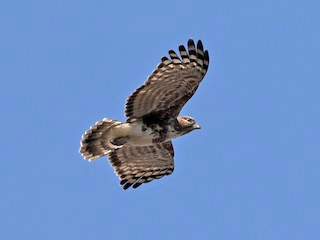

Aviceda madagascariensis
The medium sized Madagascan Baza are about 40 to 45 cm long, the wingspan is 31 to 33 cm and their tail is 19 to 23 cm long. They have a small flat head with a slight crest usually not visible in flight or far away. The adults are dark mottled brown above, except for a white rump.